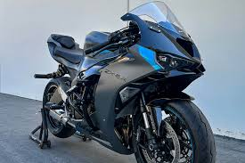

<picture>
    <!-- browser, gebruik de .avif, als je dit type kent -->
    <source srcset="assets/zx6r.avif" type="image/avif">

    <!-- gebruik de .webp, als je dat type kent -->
     <source srcset="assets/zx6r.webp" type="image/webp">

     <!-- en als je beide niet kent of niet weet wat <source> betekent, doe dan dit -->
    
</picture>